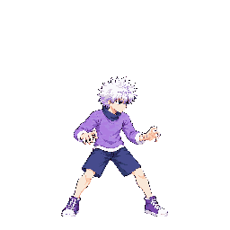

These are the selected v01 candidates as packed into a temporary, quantized whole-character diagnostic atlas (54 animations, 251 frames). The branch manifest remains unapproved. Astra inspected all 68 new frames and held all ten strips: clipping, overlapping figures, inconsistent head/body proportions, or uncertain measurements remain. The page is for choosing whether to authorize another attempt budget or keep the game stand-ins.
Atlas SHA-256: b9b99d8812d7cdb1f38e96bc5143fd2f1d4666b47a595dcb1ace041deecef130. Each crop below was extracted from atlas cells. Idle f0 is shown as the scale reference.
